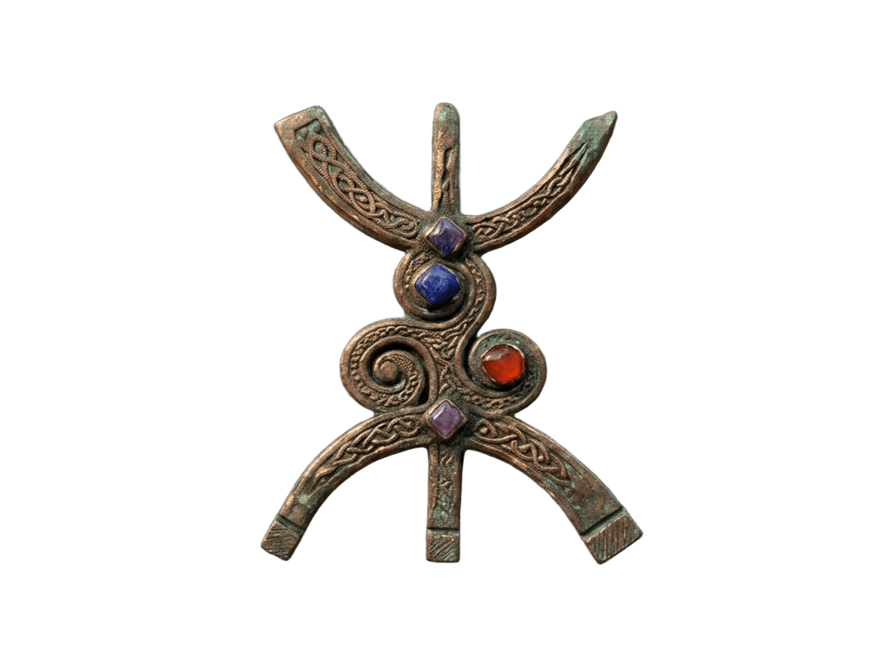

Amazigh · Celtic · Iberian Folk
Música de encuentro entre el norte de África y las tradiciones celtas e ibéricas, nacida entre Granada y Canarias.
La identidadTAZAWIT nace del encuentro entre la tradición musical Amazigh del norte de África y las músicas celtas e ibéricas. No es un grupo de música celta, ni un grupo de música norteafricana: su identidad está en el diálogo entre ambos mundos.
Voz y percusión del Rif, violín, gaitas y flautas construyen un sonido acústico y orgánico que viaja entre las montañas del Rif, el Mediterráneo, Granada y las costas atlánticas.
La música Amazigh y la música celta comparten algo profundo: la transmisión oral, la identidad comunitaria, el territorio y la memoria. TAZAWIT pone en contacto esos dos universos sin diluir ninguno de los dos.
Gaitas · flautas · vientos
Instrumentista especializado en gaitas, flautas y otros instrumentos de viento — gaita irlandesa, gaita gallega, flauta travesera, low whistle, kaval. Trayectoria vinculada al folk y a las músicas de raíz celta, con paso por proyectos como Shannon Og, Atroj o Al Firdaus Ensemble. Desarrolla su actividad musical desde Granada.
Voz · mandola · guimbri · instrumentos Amazigh
Nombre artístico de Achraf El Idrissi, músico y multiinstrumentista nacido en Alhucemas, vinculado a la cultura Amazigh y a las tradiciones musicales del Rif. Creador de Thagrawla en el año 2000 y cofundador de Atroj durante su etapa en Granada, con colaboraciones en proyectos como Ait Nahaya. Aporta la voz, la identidad musical Amazigh y los instrumentos tradicionales del norte de África.
Violín
Violinista establecido en Gran Canaria, con experiencia en la escena musical canaria en proyectos y grabaciones de música de raíz y de autor. Su instrumento actúa como puente entre las melodías de tradición celta, ibérica y mediterránea y las estructuras musicales Amazigh, con un papel central en la construcción del sonido folk y atlántico del grupo.
Multiinstrumentista · musicología
Musicólogo y multiinstrumentista nacido en Tacoronte, Canarias, vinculado al folklore desde la infancia y formado en musicología en el CSMC desde la perspectiva de la antropología musical. Ha dirigido grupos como G.M. Amazigh y Los Majuelos, colaborado con proyectos como Jóvenes Cantadores o Mestisay, y actuado junto a orquestas como la OST o la JOBS de Zaragoza. Su trabajo incluye exposiciones organológicas, conciertos didácticos y proyectos como Ductia, Piélago o Quimbao La Nuit, explorando instrumentos y timbres de tradiciones musicales de todo el mundo.
Batería y percusión
Baterista y percusionista afincado en Santa Cruz de Tenerife, referente de la escena de jazz y fusión de Canarias, con un lenguaje que integra la batería moderna con polirritmias tradicionales y la herencia rítmica brasileña y latinoamericana. Forma parte de Imazighen, el proyecto de jazz Amazigh junto a Kike Perdomo y Kino Ait Idrissen, tendiendo puentes entre la tradición rifeña y gnawa y la libertad del jazz en escenarios como el festival TifraJazz.
Para festivales, salas y programación cultural, contacta directamente con la gestión del grupo.
Descubre el sonido de TAZAWIT y encuéntranos sobre un escenario.
Correo electrónico y redes sociales oficiales se incorporarán aquí en cuanto estén disponibles.